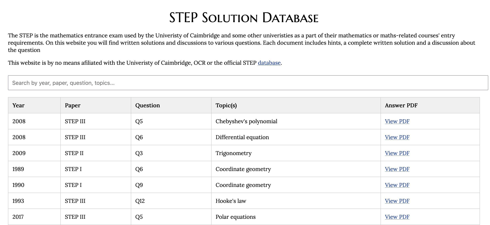
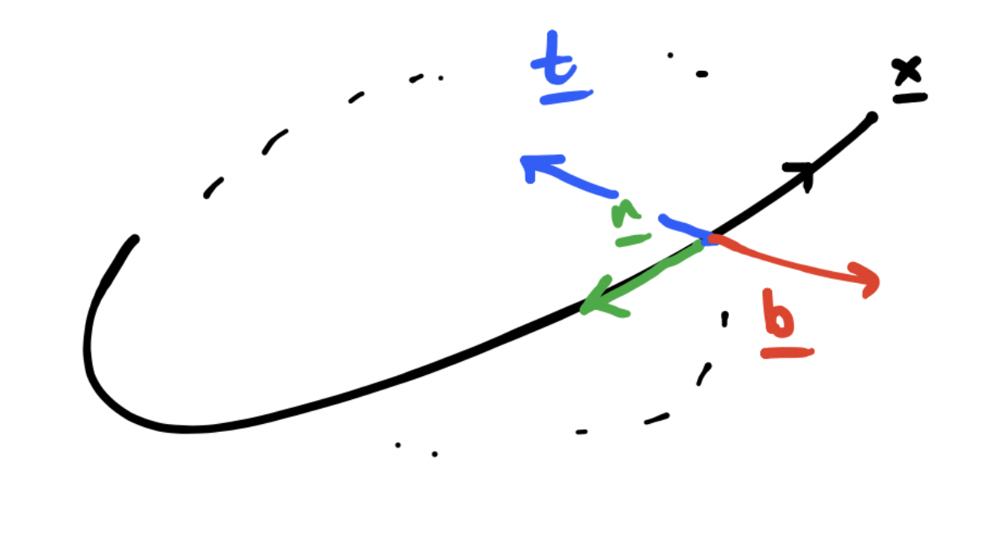

PROJECTS
Here are a collection of the projects I have worked on.
Here are a collection of the projects I have worked on.

The STEP is the mathematics entrance exam used by the University of Cambridge et al as a part of their mathematics or maths-related courses' entry requirements. I have produced written solutions and discussions to various questions displayed on a website. Each document includes hints, a complete written solution and a discussion about the question.

Following David Tong's amazing notes and supporting with Dexter Chua's notes on Vector Calculus, I have complied my own set of notes for Vector Calculus. These notes where made with and supported with resources that are opensource and online, at the time of compling these notes I have not taken a univeristy course on vector calculus. My goal is to show that you do not need to do a univeristy module to learn advanced mathematics.